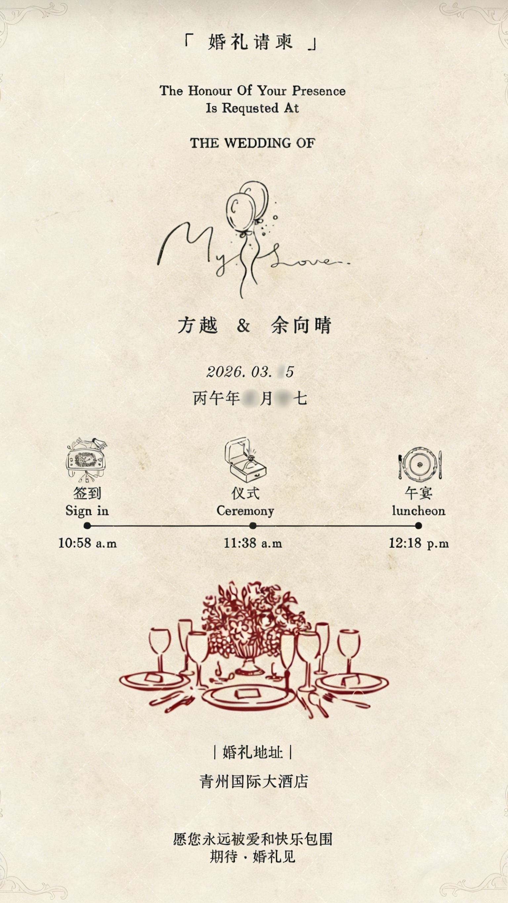

还有，官微和各平台的定时发布检查三遍。别大年三十那天出bug，我可不想那时候还在群里call你们
蛮好蛮好
求别提，已经开始开学焦虑了/p>
太感谢了！
今年决定在青州过年！
上一次感受青州的年味还是初二的时候，再后来就是回来上大学。不知不觉中，青州已经变成我的第二故乡了。
顺便：准备过节二刷《疯狂动物城2》，有想一起去的吗？
Annual Gala 2025 🥂
又是陪公司跨越寒冬的一年，领到了“最佳执行奖”，也领到了新一年的KPI。
感谢战友们的并肩作战，也感谢所有合作伙伴的包容。凡是过往，皆为序章。愿2026，品牌长青，流水长红。
亲爱的家人朋友们：
当您看到这封邀请函时，我们即将迈上人生新阶段，解锁人生新角色。
一路走来，感恩大家的支持与祝福！为表谢意，我们将于青州国际大酒店略备喜宴，诚邀您携家人拨冗光临!
期待与您共聚🥂

暂别学术界的几日，这样好的阳光，已经许久没有看过了🥹